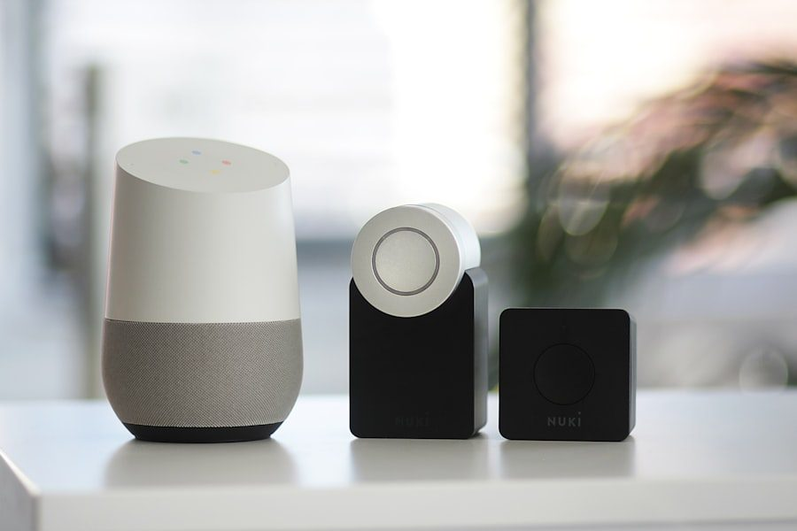

The free caregiver checklist — what to prioritize, why it matters, and what to buy first if you can only afford one or two.
By Abhijeit Karmaker · Updated July 2026
Thanks for signing up — here's the checklist. When I started helping my dad manage his tech, I bought things in a random order and wasted money on gadgets he never used. This is the list I wish I'd had on day one: the seven categories that actually move the needle on a senior's safety and independence, roughly in the order I'd tackle them.
You don't need all seven at once. Each section below explains what the device does, why it matters, and roughly what it costs — so you can decide what's worth buying now versus later. If budget is tight, start with #1 and #2; they cover the two biggest risks (a fall with no way to call for help, and being unreachable).
This is the single most important device on this list. If your parent lives alone or spends significant time alone, a fall with no way to call for help is the scenario every other item on this checklist is trying to prevent. Modern systems range from basic in-home base stations to GPS-enabled pendants that work anywhere, with or without a monthly fee.
See our full comparison: Best Medical Alert Systems and, if a subscription isn't in the budget, Medical Alert Systems With No Monthly Fee.
A phone that's actually easy to use — large buttons or a simplified screen, loud and clear audio, a visible SOS button — closes the gap between "has a phone" and "can actually use it in an emergency." This matters even more than the alert system in some households, since it doubles as the way you check in day to day.
Compare options in Best Cell Phones for Seniors, or if you're deciding between a simplified device and a regular smartphone, read Jitterbug vs. iPhone for Seniors.
Especially relevant if there's any memory impairment or wandering risk. A small GPS tracker — worn as a pendant, clipped to a keychain, or built into a watch — means a wandering incident is a quick check of an app instead of a frantic search. Even without memory concerns, it's peace of mind for anyone who drives or walks independently.
Full picks in Best GPS Trackers for Seniors.
High blood pressure is one of the most common — and most manageable — health risks for older adults, but only if it's actually being tracked. A simple at-home monitor turns "I think it's fine" into an actual number you and their doctor can act on, and modern models sync readings to an app automatically so nothing gets lost on a scrap of paper.
See Best Blood Pressure Monitors for Seniors.
Untreated hearing loss is linked to social withdrawal, missed medical instructions, and — relevant to this whole checklist — not hearing a smoke alarm or a phone ringing. You don't necessarily need a $3,000 prescription hearing aid to start; OTC hearing aids and simple sound amplifiers now cover a lot of the same ground at a fraction of the cost.
Read our Best Hearing Aids for Seniors guide to see what fits the budget and the hearing loss level.
A voice-activated smart speaker (for hands-free calls, reminders, and questions), smart plugs (so a lamp or heater can be controlled without reaching behind furniture), and a video doorbell (so they never have to answer the door to a stranger they can't identify) are the three smart-home additions that pay off fastest for seniors specifically.
Full breakdown in Best Smart Home Devices for Seniors.
The single best tool for fighting isolation. A tablet set up correctly — large icons, one-tap video calling, photos from grandkids appearing automatically — turns "I never hear from anyone" into regular, low-effort contact with family. The setup matters more than the device itself; a $200 tablet configured well beats a $600 one left at factory defaults.
See Best Tablets for Seniors and our step-by-step How to Set Up an iPad for an Elderly Parent.
Buy the medical alert system. Everything else on this list improves quality of life; the alert system is the one that directly addresses "what happens if they fall and can't get up." Start there, then work down the list as budget allows.
Once the tech side is covered, pair it with a physical safety pass using our Home Safety Checklist, or go deeper on fall prevention specifically with our Fall Prevention Technology Guide.